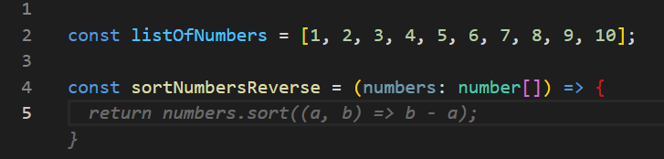
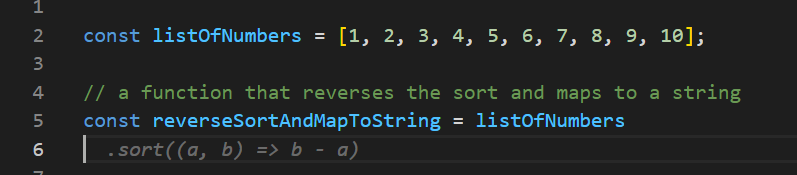
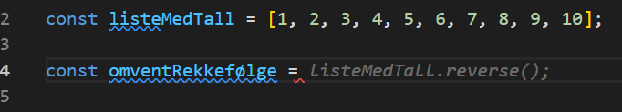
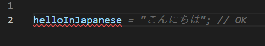
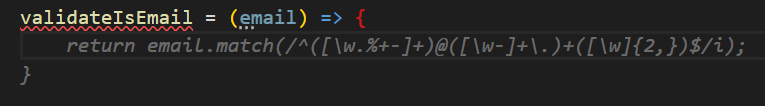

Frontend Efficiency
A streamlined development (& deployment) process
Jan Greger Hemb
CI/CD DevOps
AI-powered development
Lowest possible turnaround time
Modern agile and kanban
Controversial opinions
CI/CD DevOps
- Continuous Integration (CI)
- Continuous Delivery (CD)
- Microservices
- Infrastructure as Code (IaC)
- Monitoring and Logging
- Communication and Collaboration
- Continuous feedback
- Continuous Integration (CI)
- Continuous Delivery (CD)
Continuous Integration
Trunk based development
Always deployable
Rapid merging
Automated testing
Branches
Push to main
Short lived branches
Junior and senior
Less than a few days
Continuous Delivery
Automated deployment, mostly
Continuous Deployment
Fully automated deployment
Test, stage and prod
Autodeploy to test
Manual deploy to stage
Manual deploy from stage to prod
AOF

Not great DevOps
Master should be production
Why?
Lowest difference between dev and prod
Lowest difference between dev and prod
Less time to bugfix
Less time to feature feedback
Less merge conflicts
No more fix in production
How do do that?
Vercel
Auto-deploy on merge to master
Deploy previews on PR
No stage
Feature flags 🏴☠️
if(featureFlags["new-cool-feature"] === true){
renderNewCoolFeature();
}
Merge before feature is ready
A/B testing
Remove when done
Feature flag interference
Feature flag interference
Depend on each other
Aim to remove all flags in 3 months
Remove when feature done
Start fully automated
Scale back as needed
Predictable deployment system
AI-powered development
GitHub co-pilot ✈️
Open AI - ChatGPT 💬
GRAMMARLY ✏️
GitHub co-pilot
GPT-3
Code solutions
Autocomplete
Short snippets
Excel at simple code
Excel at simple code

Naming is key
GPT-3 is licensed exclusively to Microsoft
54 million public GitHub repositories
159 gigabytes of Python
Insecure code
Helps me a lot
Best for one liners
Always have to check
Not a replacement
Finish a thought
Advanced tips
Naming is everything
Other languages
Translate
Regex
CTRL + Enter

ChatGPT
Helped with research
Discussing code solutions
Confidently wrong


GPT-3.5
Discuss code
Discuss pull requests
Jailbreaks

Co-pilot vs ChatGPT
| Co-pilot | ChatGPT |
|---|---|
| GPT-3.0 | GPT-3.5 |
| For developers | General use |
| Code completion | Code description |
| Can't discuss | Can discuss |
| 10$ | Free* |
Lowest possible turnaround time
One company develops
One company deploys
Fast local development
Fast local development
Fast IDE
Fast (re-)build times
Fast tests
Fast CI/CD
Reduce red tape
The reason we have bureaucracy is to average out quality, so both good and bad developers make the same mediocre level of quality
We change by adding processes

Do you really need?
- Smart commits
- 3 people approving every deploy to prod
- Approval of architecture before you try something new
- Send emails rather than slack messages
- Pull requests
- Unit tests instead of integration tests
- Conventional changelog
We forget about speed
Solution?
Autonomous teams with self control
Culture Inertia
Resistance to change
People rather keep a broken system around rather than face something new, better, but unknown
Code collaboration
Modern PR process
No direct communication
Approval fishing
Don't understand code
No place for discussion
Stuck for weeks
Don't care
How to fix it?
Pair programming
Live code review
Work with devs you trust
Learn for each other
Pull requests is not the only solution
Modern agile and kanban
Transcending scrum
Agile principles
Individuals and interactions over processes and tools
Working software over comprehensive documentation
Customer collaboration over contract negotiation
Responding to change over following a plan
Waterfall
Why is Scrum bad?
Sprint turnaround
Infrequent deploys
Broken promises
Quality falls as speed increases
Kanban
Continuous sprint
Continuous deployment
Continuous improvement
Continuous learning
Continuous change

Refining tasks
Enter planning with many questions
Land design and feature before
Several rounds of refinement
Sprint planning is not a task discussion meeting
No estimations
Guessing
False sense of security
We don't make cars
Even story points not great
Even story points not great
Should estimate complexity
Estimation of time
5 points
5 hours
5 days
What to do?
Most important task on top
Similar size
Refine it well
Land design
Focus on value
Task flow
- New task
- Rough refinement
- Iterate on design and refinement
- Include a developer
- All agree on task and design
- Ready for development
All projects need a designer
Even internal projects
Standup
Broken
Discussion meeting
No idea what you are talking about
Have a blocker until next standup
Solution
Solution
Don't wait until standup
Well refined tasks
Keep it short
Create new place for discussions
Small teams